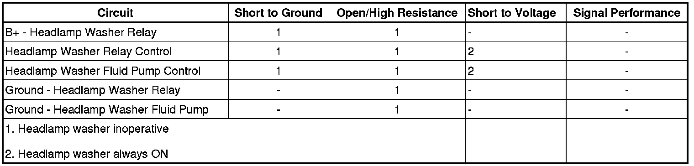

Headlamp Washer Malfunction
Headlamp Washer Malfunction
Diagnostic Instructions
* Perform the Diagnostic System Check - Vehicle (Initial Inspection and Diagnostic Overview) prior to using this diagnostic procedure.
* Review Strategy Based Diagnosis (Initial Inspection and Diagnostic Overview) for an overview of the diagnostic approach.
* Diagnostic Procedure Instructions (Initial Inspection and Diagnostic Overview)provides an overview of each diagnostic category.
Diagnostic Fault Information

Circuit/System Description
When the washer switch is pressed, the windshield wiper switch sends a voltage signal through windshield washer switch signal circuit to the wiper motor module and the body control module (BCM) indicating the wash command. Every fourth time the windshield washer system is commanded ON, the BCM will initiate a headlamp wash cycle by applying B+ to the headlamp washer relay control circuit energizing the relay. The relay then closes its switch contacts applying B+ through the headlamp washer pump motor control circuit to the headlamp washer pump motor. The pump motor then runs spraying washer fluid on the headlamps. A headlamp wash cycle consists of a prewash, then a pause, and then a wash operation.
Reference Information
Schematic Reference
Instrument Cluster Schematics (Instrument Cluster Schematics)
Connector End View Reference
Component Connector End Views (Connector Views)
Description and Operation
Wiper/Washer System Description and Operation (Wiper/Washer System Description and Operation)
Electrical Information Reference
* Circuit Testing (Component Tests and General Diagnostics)
* Connector Repairs (Component Tests and General Diagnostics)
* Testing for Intermittent Conditions and Poor Connections (Component Tests and General Diagnostics)
* Wiring Repairs (Component Tests and General Diagnostics)
Scan Tool Reference
Control Module References (Programming and Relearning)for Scan Tool Information
Circuit/System Verification
1. Verify the windshield washers operate normally.
2. Verify the headlamps operate normally.
3. Verify the windshield washer fluid level is above the minimum level.
• If not above the minimum level, fill the reservoir and inspect for leaks.
4. Verify the scan tool IPC Washer Fluid Level parameter is OK.
Circuit/System Testing
1. Ignition OFF, disconnect the HEADLAMP WASH Relay.
2. Test for less than 5 ohms of resistance between the ground circuit terminal R26 and ground.
• If greater than the specified range, test the ground circuit for an open/high resistance.
3. Ignition ON, verify that a test lamp illuminates between the B+ terminal R28 and ground.
• If the test lamp does not illuminate, test the HEADLAMP Circuit Breaker for an open.
4. Verify that a test lamp does not illuminate between the control circuit terminal R25 and ground.
• If the test lamp illuminates, test the control circuit for a short to voltage.
5. Connect a test lamp between the control circuit terminal R27 and the ground circuit terminal R25.
6. Command the Headlamp Washer Relay On and OFF with a scan tool. The test lamp should turn ON and OFF when changing between commanded states.
• If the test lamp is always ON, test the control circuit for a short to voltage. If the circuit tests normal, replace the BCM.
• If the test lamp is always OFF, test the control circuit for a short to ground or open/high resistance. If the circuit tests normal, replace the BCM.
7. Ignition OFF, disconnect the harness connector at the headlamp washer fluid pump.
8. Test for less than 5 ohm of resistance between the ground circuit terminal A and ground
• If greater than the specified range, test the ground circuit for an open/high resistance.
9. Connect the harness connector at the headlamp washer fluid pump.
10. Install a 3A fused jumper wire between the B+ circuit terminal R28 and the control circuit terminal R25. Verify the headlamp washer fluid pump is activated.
• If it does not activate, test the control circuit for a short to ground or an open/high resistance. If the circuit tests normal, replace the headlamp washer fluid pump.
11. If all circuits test normal, test or replace the headlamp washer relay.
Component Test
Rear Window Washer Fluid Pump
1. Ignition OFF, disconnect the harness connector at the headlamp washer fluid pump.
2. Install a 20A fused jumper wire between the control terminal B and 12 volts. Install a jumper wire between the ground terminal A and ground.
3. Verify the headlamp washer fluid pump is activated.
• If the headlamp washer fluid pump does not activate, replace the washer fluid pump.
Relay Test
1. Ignition OFF, disconnect the relay.
2. Test for 70-100 ohms of resistance between terminals 85 and 86.
• If the resistance is not within the specified range, replace the relay.
3. Test for infinite resistance between the following terminals:
* 30 and 85
* 30 and 86
* 30 and 87
* 85 and 87
• If not the specified value, replace the relay.
4. Install a 10A fused jumper wire between relay terminal 85 and B+. Install a jumper wire between relay terminal 86 and ground. Test for less than 2 ohms of resistance between terminals 30 and 87.
• If greater than the specified range, replace the relay.
Repair Instructions
Perform the Diagnostic Repair Verification (Verification Tests) after completing the diagnostic procedure.
* Headlamp Washer Pump Replacement (Service and Repair)
* Relay Replacement (Attached to Wire Harness) (Relay Replacement (Attached to Wire Harness))Relay Replacement (Within an Electrical Center) (Relay Replacement (Within an Electrical Center))
* Control Module References (Programming and Relearning)for BCM replacement, programming, and setup